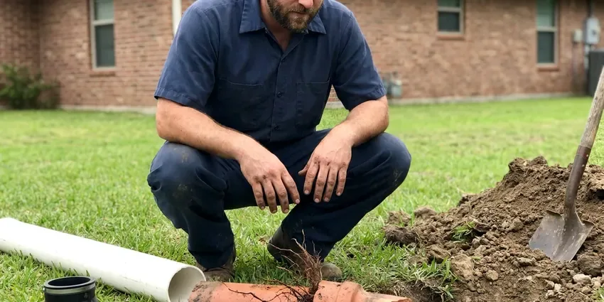

Gas Water Heater Repair in Fremont, CA
FBL Plumbing repairs gas water heaters in Fremont, CA, from the thermocouple to the flue. Most calls are fixed in one visit.
- Fast Gas Heater Repair
- Pilot and Thermocouple Repair
- Nearby Techs
- Licensed Northern California Plumbers

Gas Water Heater Fixes in Fremont, CA, Done Safely.
We leak test and check draft before we wrap up.
Gas Water Heater Repair in Fremont, CA for Pilots, Burners and Gas Valves
FBL Plumbing repairs every vent style of gas water heater in Fremont, from a plain atmospheric tank on a metal flue to a power vent unit pushing exhaust through PVC. Natural gas and propane units both get serviced. Thermopiles and gas controls get swapped on site.
Work we handle every week:
- Diagnosing and repairing pilot outages
- Honeywell and White-Rodgers gas control valve testing and replacement
- Pilot & Burner Repairs

Additional Plumbing Repair Services in Fremont, CA
We offer expert plumbing repair services across Fremont, CA to fix leaks, restore flow, and keep your system running smoothly.


Customers
Why Choose FBL Plumbing for Gas Water Heater Repair in Fremont, CA?
Quality parts last longer, so we install factory controls and listed universal valves, not the cheapest kit on the shelf. A repair should hold for years. Cheap thermocouples fail fast. The tank also gets a quick look at the anode and the relief valve, since those tell us how much life it has left.
- Local Knowledge, We know Fremont plumbing codes and the failures we see most in Northern California homes.
- Gas Safety, Every joint we open gets leak tested before the heater is relit.
- Real Parts, We use manufacturer approved controls and thermocouples.
Citywide Coverage
Garage or interior closet, we repair gas water heaters wherever they happen to sit in Fremont, including the ones squeezed under a staircase. Tight closets take a bit more time. We can book you fast across town.
Experienced Team
The team has handled everything from a five-minute pilot relight to a power vent motor swap and a full flue rebuild. Very little catches them off guard. Whoever shows up has done your repair many times.
Safety-First Approach
Code compliance is part of the job, not an extra. Each repair follows the local plumbing code in Northern California along with the national fuel gas standards that cover venting and clearances to anything that can burn. Inspections tend to go smoothly.
Trusted Certified Fremont Plumbing Services Professionals
At FBL Plumbing, we are proud to offer certified plumbing services throughout Fremont, CA. Those papers on the wall mean something. Every repair, install and maintenance visit follows strict safety and quality rules, and the plumbers doing the work carry recognized industry credentials.
Call Us Now PHCC Plumbing Contractor Recognition
PHCC Plumbing Contractor Recognition Better Business Bureau (BBB) Accreditation
Better Business Bureau (BBB) Accreditation Angi Certified Pro
Angi Certified Pro ISO 9001 Quality Management Certification
ISO 9001 Quality Management CertificationWhat Our Gas Water Heater Repairs Cover in Fremont, CA
Pilot Light and Ignition Service in Fremont
No hot water and a dark pilot window usually point to the ignition side of the heater. We pull the pilot assembly and look at the thermocouple tip, the pilot orifice and the piezo igniter wire. A thermocouple that tests weak on the millivolt meter will not hold the gas valve's magnet open, so the pilot drops out a minute after you relight it by the label. Most trucks carry the common pilot kits.

Commercial Gas Water Heater Repair in Fremont, CA
Restaurants and salons in Fremont, CA burn through hot water faster than any house, and a down heater stops the business. Most commercial tanks hold 75 to 100 gallons and run far higher BTU inputs than a home unit. We work on those larger atmospheric and power vent units, including the electronic controls, the burner manifolds and the piping that ties two tanks together on one supply. Every hour down matters. Repairs can often be booked before you open or after you close.
Gas Water Heater Repair Cost in Fremont, CA
Thermocouple and pilot repairs usually run $150 to $350. Gas control valves often come in at $350 to $700 installed. Power vent blower work runs $400 to $800, and a full replacement with a new gas tank generally costs $1,600 to $3,000 depending on size, venting and whether the install needs code updates. Age of the tank shapes what we recommend. Past about twelve years, we will show you both numbers.
Thermostat and Gas Valve Repair in Fremont, CA
Scalding water at the kitchen tap is a valve problem until proven otherwise. Some controls drift high as the sensor ages, and some dials get turned past hot. Our plumbers in Fremont, CA measure the outlet temperature at the nearest fixture, compare it to the dial and replace the gas control if it is overshooting, because water at 140 degrees can burn a child's skin in a few seconds. A setting near 120 degrees works for most households.
Gas Valve and Thermostat Repair in Fremont, CA
Lukewarm showers and a tank that never catches up often trace back to the gas control. We check the thermostat setting, the immersion sensor and the valve's outlet pressure with a manometer. On most residential tanks the thermostat lives inside the gas valve body, so a bad sensor or a stuck magnet usually means replacing the whole control rather than one small part. Plan on roughly an hour for the swap. Every joint on the new valve gets leak tested.
After-Hours Gas Water Heater Repair in Fremont, CA
A gas smell, a flooded garage or a relief valve blowing steam are the calls that cannot wait until Monday. FBL Plumbing runs emergency gas water heater repair across Fremont, CA, with a tech who can shut the unit down, find the cause and make it safe the same day. Any gas smell gets handled first. Open a door on the way out and call the gas utility from the yard. Once they clear it, we take care of the heater.
Propane Water Heater Repair in Fremont
Propane and natural gas heaters look the same but burn at different pressures. Propane units need a matching orifice and a control set near 11 inches of water column. Natural gas runs closer to 7 inches, so a heater converted badly, or a regulator that drifted, gives you soot, a yellow flame and a pilot that keeps going out for no obvious reason. A manometer reading tells us the supply pressure. Wrong parts get swapped for the right ones.

All Major Gas Water Heater Brands Serviced in Fremont
Every brand label we see in garages and closets uses one of a handful of gas control designs. Rheem and Ruud share most parts, and State shares a lot with A.O. Smith. Bradford White uses its own controls, which we carry on their own shelf. Knowing which family a heater belongs to lets the tech bring the right valve, thermocouple or igniter on the first trip instead of ordering parts and coming back two days later. A photo of the rating plate helps us prep.
Gas Water Heater Repair Near Me in Fremont, CA
Gas water heater repair is half plumbing and half gas fitting. FBL Plumbing sends techs trained on both, so the same person who replaces your gas valve also checks the flue and the combustion air. They test for leaks with an electronic detector and soap solution. Draft gets checked too.
Searching for gas water heater repair near me in Fremont, CA should turn up a plumber who can be there today. FBL Plumbing keeps techs spread across town, so the drive is short and the truck is already stocked with gas valves and pilot kits. Homes across Northern California put gas tanks in garages, closets and attics. Each location has its own venting quirks. We have worked in all three.
FBL Plumbing at a Glance
- Fully licensed plumbing team covering Fremont, CA
- 24/7 emergency service with same-day scheduling
- Upfront, flat-rate pricing before work begins
- 4.8-star rated by 834+ Northern California customers
Fremont Map
Fremont Information
- Population
- 226,208
- Area codes
- 510/650/408
- Service area
- Fremont and towns within a 40 mile drive
- Nearby
- Newark, Milpitas, Union City, Sunnyvale
Water hardness in Northern California varies a lot by source, with snowmelt-fed systems running soft and many inland groundwater systems running mineral-heavy. Yearly flushing and a quick check keep a gas tank making hot water for more years.
Expert Services
Call FBL Plumbing for reliable plumbing work done by licensed pros in Fremont, CA.
Our Specialized Plumbing Services in Fremont, CA
At FBL Plumbing, you get every kind of plumbing service from one company across Fremont, CA. We go from leak detection all the way to full system installations, for homes and commercial buildings, and we do it quickly at a fair price. Take a look at our core services below:


How a Gas Water Heater Repair Works in Fremont, CA
Gas water heater repair should be quick and clearly priced.
Schedule a Visit
Call (669) 319-2034 and describe what is happening, like a dead pilot, a flashing light or a gas odor. If you smell gas, leave the home first and call your gas utility.
Inspect and Diagnose
We test the pilot, thermocouple, gas valve, burner and venting. You get a flat price for the repair before we begin.
Repair and Safety Test
We replace the failed parts, light the unit and run it through a heating cycle. Gas connections are leak tested and draft is confirmed.
Frequently Asked Questions About Gas Water Heater Repair in Fremont
Expect a range of $150 to $800 in Fremont, CA. The part and the access decide where in that range you fall. Simple jobs like a thermocouple sit near the bottom, while a gas control valve, a power vent blower or a flue rebuild pushes the bill toward the top end of the range. The quote comes before the work.
Most repairs take one to three hours. Pilot and thermocouple jobs usually wrap up in under an hour. A gas control valve, a power vent blower or a flue rebuild takes longer, and if the part has to be ordered from a supply house the repair can stretch to a second visit a day or two later. We tell you the timeline before we start.
Lukewarm water, a pilot that keeps going out and a rumbling noise from the bottom of the tank are the usual early signs of trouble. Rusty hot water or a puddle at the base can mean the tank is on its way out. A rotten egg smell is different. Leave the house and treat it as a leak until it is tested.
Yes, by the label instructions. Turn the control knob to off, wait the full five minutes the label calls for so any gas clears, and then follow the steps in order. A pilot that fails twice or dies again within a day means stop. Any gas smell means you stop and get outside.
Relighting a pilot by the label is fine. Replacing a gas valve, a thermocouple or a vent connector is work for a licensed plumber. A bad gas joint or a vent that is put back slightly wrong can leak fuel or carbon monoxide into the house, and many manufacturer warranties are void after unlicensed gas work. Codes in Fremont, CA generally require a licensed plumber for gas work.
A thermocouple is a small copper-sheathed rod that sits in the pilot flame and makes a tiny electric current. That current holds a magnet in the gas valve open. If the flame dies, the current stops. When the pilot goes out, the magnet lets go and the valve shuts off gas to both the pilot and the burner, which is the safety that keeps raw gas from filling a closet. Weak thermocouples cause more pilot outages than anything else.
A weak thermocouple is the usual cause. A plugged pilot orifice can also make the flame too small to heat it. On vapor-resistant tanks, a lint-clogged flame arrestor can starve the burner and trip the thermal switch, which looks like a pilot outage from the outside. Drafts can blow out older pilots.
Yes, when the venting fails. Exhaust can spill indoors through a loose flue, a blocked chimney or a draft hood that backdrafts. We check draft on every repair with a smoke test or a combustion analyzer, and we look for heat-scorched paint or melted plastic near the draft hood, which are signs of spillage. A carbon monoxide alarm belongs on each floor of the house.
What Our Customers Say About Our Plumbing Experts

James P.
Our restaurant had a slow leak at the hand sink that was rotting the cabinet base. FBL Plumbing came in at six in the morning before prep, replaced the trap and both supply lines, and was packed up before my first cook clocked in.
Commercial Plumbing · Union City, CA
Megan L.
Our upstairs tub drained so slowly that every shower turned into a bath. FBL Plumbing pulled a wad of hair out of the stopper and then snaked the line past the trap. Three months later it still drains fast.
Drain Cleaning · Mountain View, CA
Diane F.
My kitchen faucet had dripped for months and I finally got tired of hearing it at night. FBL Plumbing came out the next morning, replaced the cartridge and the O rings, and tightened a loose base that was letting water under the sink.
Faucet Repair · Union City, CA
Sofia M.
Two new toilets went in during one visit. The tech set them on new wax rings and swapped the old supply lines. He also noticed our bathroom faucet dripping and replaced the cartridge while he was there. No mess left behind.
Toilet Installation · Mountain View, CAKaren W.
After our third pinhole leak in copper, we stopped patching. FBL Plumbing gave us a written plan room by room and repiped the house in PEX while we stayed in it. The crew covered our floors every morning and cleaned up every night.
Repiping · Fremont, CA
Mark T.
The floor drain in our office break room backed up every few weeks. The plumber ran a cable, then put a camera down and found roots at a joint about thirty feet out. Seeing it on the screen made the decision easy.
Drain Cleaning · Milpitas, CA